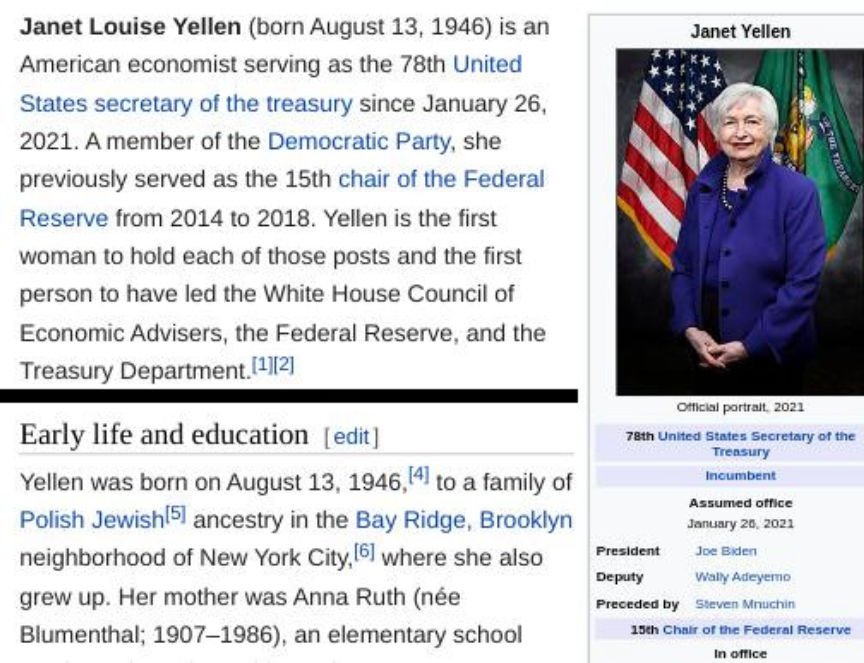
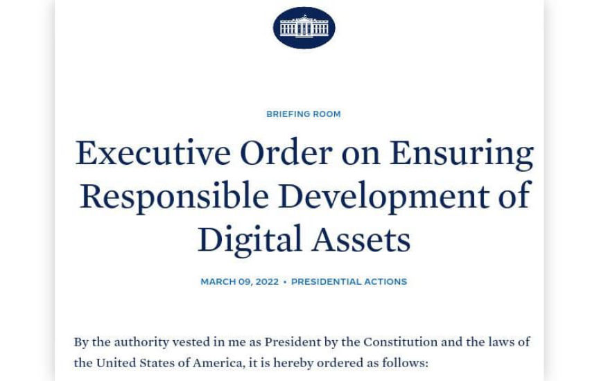
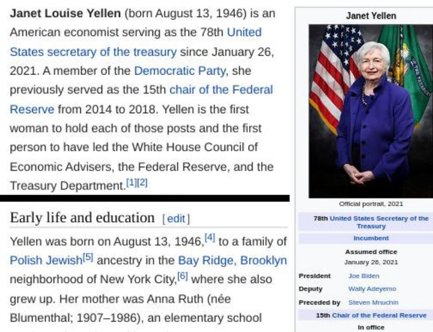
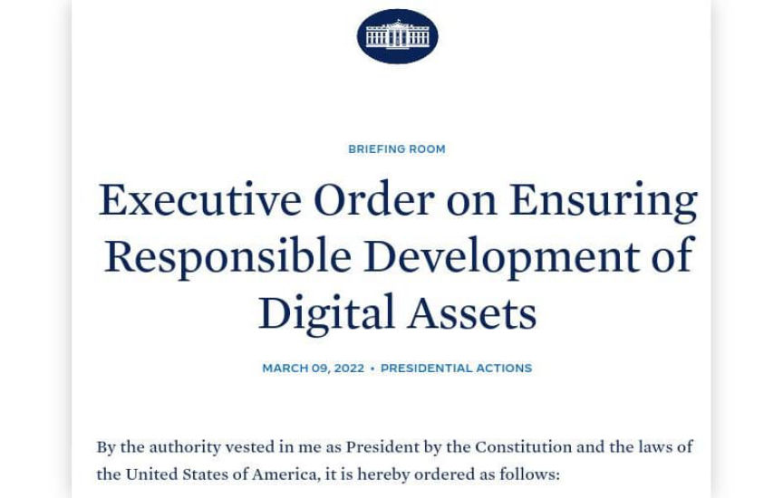

Treasury to Warn that Crypto Needs Major Regulations
~2 min read | Published on 2022-09-09, tagged General-News using 355 words.
The Treasury Department plans to warn the White House that without new regulations, cryptocurrency poses a threat to the U.S. economy.
According to a report from the Washington Post, the Treasury Department plans to warn the White House that “cryptocurrencies could pose significant financial risks that outweigh their benefits unless the government rolls out major new regulations.” The Treasury plans to call for increased regulation and oversight through four reports in September 2022.

“Treasury’s reports will highlight the economic danger of cryptocurrencies in several key areas, including the fraud risks they pose for investors, the two people familiar with the matter said, speaking on the condition of anonymity to discuss the reports before they’re public. Treasury’s assessments conclude that cryptocurrencies do not yet pose a stability risk to the broader financial system — but that the situation could change rapidly.”
“Treasury is trying to create the analytical basis for very strong oversight of this sector of finance,” one of the people familiar with the matter allegedly told the Washington Post. “They’re also hoping that with this kind of report, it becomes hard to have regulations that back off of tough oversight of the industry. This framework would serve as a benchmark, to say ‘Let’s be focused on these risks and not be carried away with the technology and industry promises.’”
President Biden signed an executive order in March 2022 for a review of the federal government’s handling of cryptocurrencies. The Treasury Department’s reports are in response to the March executive order.

On September 8, the White House Office of Science and Technology Policy responded to the executive order, publishing a report that called for federal oversight and regulation of cryptocurrency mining. Federal agencies, including the Environmental Protection Agency and the Department of Energy, need to create standards for the industry’s “impact on the environment.”
“Should these measures prove ineffective at reducing impacts, the Administration should explore executive actions, and Congress might consider legislation, to limit or eliminate the use of high energy intensity consensus mechanisms for crypto-asset mining,” the report said.
Treasury will warn White House that crypto needs major regulations | www.washingtonpost.com, archive.org
According to a report from the Washington Post, the Treasury Department plans to warn the White House that “cryptocurrencies could pose significant financial risks that outweigh their benefits unless the government rolls out major new regulations.” The Treasury plans to call for increased regulation and oversight through four reports in September 2022.

Janet Yellen, the United States Secretary of the Treasury
“Treasury’s reports will highlight the economic danger of cryptocurrencies in several key areas, including the fraud risks they pose for investors, the two people familiar with the matter said, speaking on the condition of anonymity to discuss the reports before they’re public. Treasury’s assessments conclude that cryptocurrencies do not yet pose a stability risk to the broader financial system — but that the situation could change rapidly.”
“Treasury is trying to create the analytical basis for very strong oversight of this sector of finance,” one of the people familiar with the matter allegedly told the Washington Post. “They’re also hoping that with this kind of report, it becomes hard to have regulations that back off of tough oversight of the industry. This framework would serve as a benchmark, to say ‘Let’s be focused on these risks and not be carried away with the technology and industry promises.’”
President Biden signed an executive order in March 2022 for a review of the federal government’s handling of cryptocurrencies. The Treasury Department’s reports are in response to the March executive order.

“Responsible”
On September 8, the White House Office of Science and Technology Policy responded to the executive order, publishing a report that called for federal oversight and regulation of cryptocurrency mining. Federal agencies, including the Environmental Protection Agency and the Department of Energy, need to create standards for the industry’s “impact on the environment.”
“Should these measures prove ineffective at reducing impacts, the Administration should explore executive actions, and Congress might consider legislation, to limit or eliminate the use of high energy intensity consensus mechanisms for crypto-asset mining,” the report said.
Treasury will warn White House that crypto needs major regulations | www.washingtonpost.com, archive.org